¶ A two stroke compression release allows you to bleed some of compression pressure off from a big bore two stroke engine. This allows you to kick the engine over easier.
On a two stroke, three ways are used to accomplish this.
- A lever on the handlebar, connected by a cable, to an exhaust valve screwed into the head.
- A cable connected to an exhaust valve on the cylinder, that is automatically operated by a cam on the kickstarter.
- A lever on the handlebar, connected by a cable, to an exhaust valve screwed into the cylinder.
You will notice that the two stroke can use a compression release in the cylinder OR the cylinder head. When the compression release is in the cylinder it will release the pressure in the cylinder until the piston covers the port hole in the cylinder. This cuts the compression in direct relation to where the port is in the cylinder. The closer to the cylinder head the hole is the less compression there will be. The further away it is from the cylinder head the higher the compression.
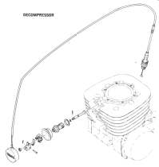 Decompression Valve Assembly |
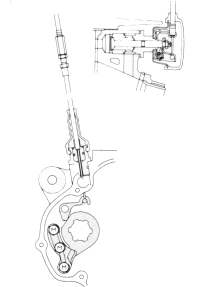 Kickstarter Cam. |
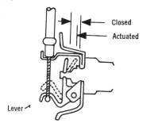 Compression Release Adjustment. |
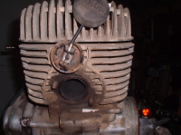 Compression Release. |
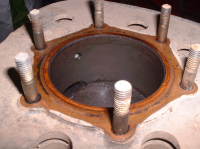 Compression Release Hole. |
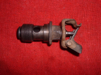 Compression Release Unit. |
Yamaha DT360-400 singles used this type of compression release. Maico Motorcycles did too. You could also make it fit other big two strokes that didn't have compression releases by cutting some fins out of the way and drilling and tapping a hole in the cylinder.
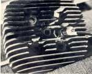
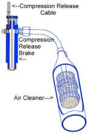
Some, like this Victor Compression Release, are specially designed to ease starting AND be an engine brake.
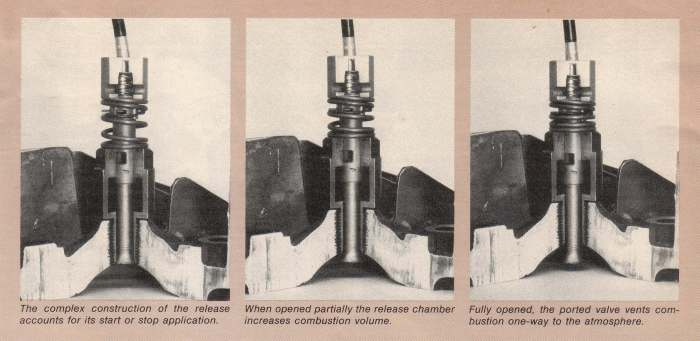
All this talk about two stroke compression releases and engine brakes is not real relevant to the new two strokes we have today. This is because the modern two stroke has absolutely gigantic ports and Power Valves. This keeps the compression pressure at slow, kickstarting speeds quite low but once the engine gets revving things really pick up and high horse power is achieved through high engine RPM and the unique port design of the two stroke engine.
Yeah, I know, "New" and "Modern" don't rightly mean the same thing in 2020 as they did in 1998. I am 70 this year, "New" and "Modern" two strokes seem to be few and far between these days.
The new, super efficient, disk brakes also work much better then the old drum brakes. This makes any extra engine braking with a compression release not worth the extra maintenance. However, it is good to know about them. A lot of these engines are still running out there and you may run into them.

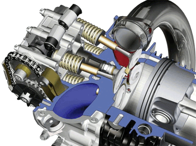 |
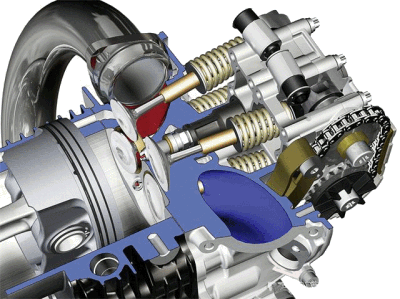 |
Copyright © Dansmc.com. All rights reserved.